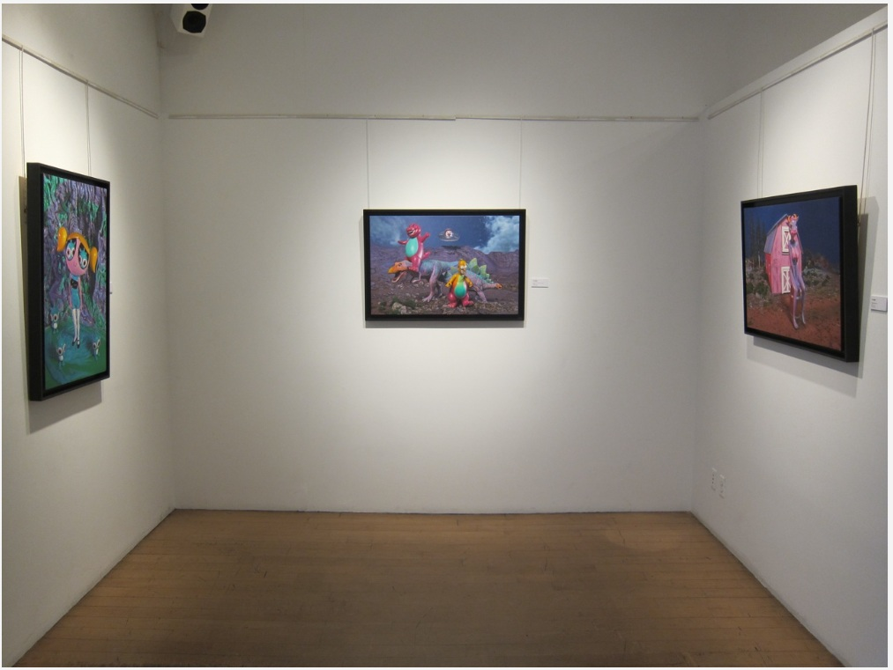
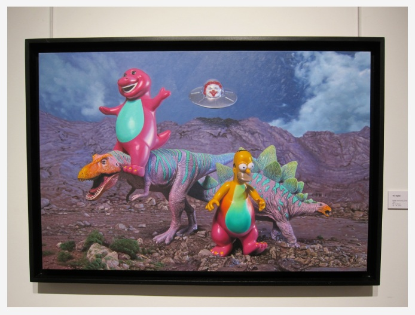
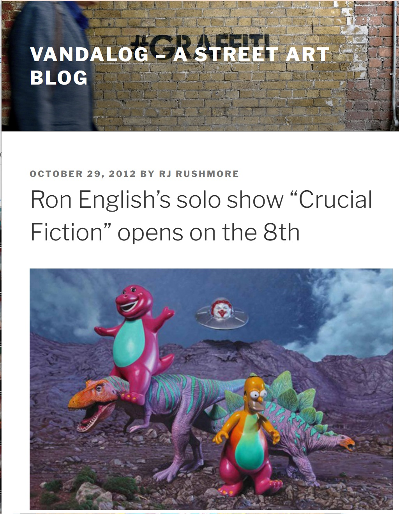
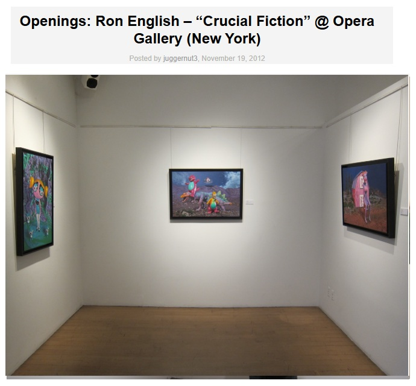
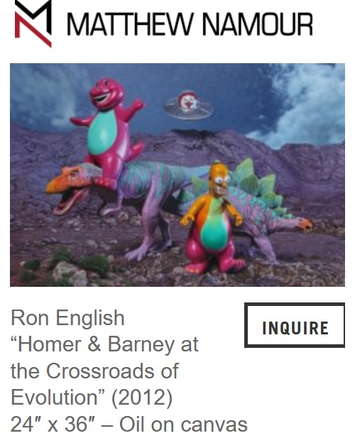

Exhibitions
Crucial Fiction, Opera Gallery, New York, New York, US, November 1–29, 2012.
Context Art Miami, Galerie Matthew Namour, Booth 240, Miami, Florida, US, November 29–December 4, 2016.
1st Birthday!, Matthew Namour Gallery, Montreal, Quebec, Canada, June 29–July 30, 2017.
Literature
Ron English, Fauxlosophy: The Art of Ron English (San Francisco: Last Gasp, 2016), p. 148. ISBN 978-0867196566.
Ron English, Death and the Eternal Forever (Korero Press, 2014), p. 82. ISBN 978-0957664920.
Ron English, Status Factory: The Art of Ron English (San Francisco: Last Gasp, 2014), p. 106. ISBN 978-0867197891.
Ron English, Original Grin: The Art of Ron English (Paris: Cernunnos, 2019), p. 319. ISBN 978-2374950938.
Notes
Also known as Homer & Barney at the Crossroads of Evolution.
This work references Homer Simpson from The Simpsons.
Ancillary Documentation







Selected Online Circulation
Selected examples of the work’s online circulation, reproduction, or discussion. This list is not exhaustive; it is intended to document representative appearances of the image beyond formal exhibition and publication records.